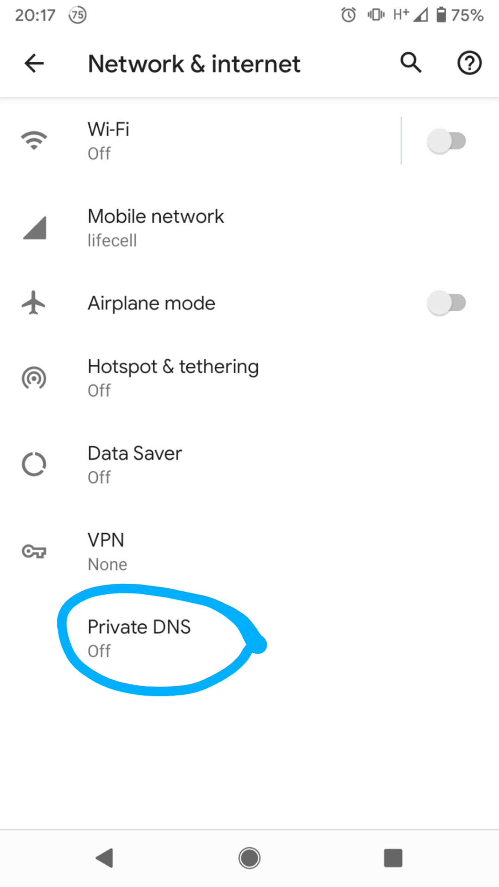
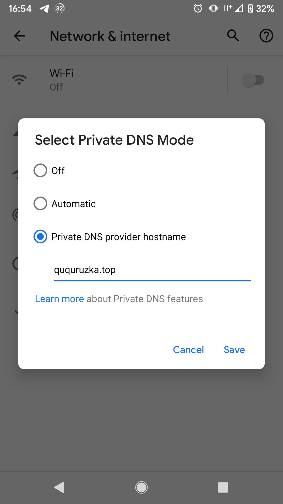

FAQ
- Supported TLS v1.2 and v1.3 (the latest and the fastest)
- Why you building this porject? I started this project around 2019. During that time, with my private dns, I need an easy way to filter ads and tracker, so I rent a server and learn how to achive this.
- Why you dont like huge traffic? I'm still a student. and I run this service with my pocket money and spare time. Just as a hobby to learn somehting new. buying big server or Anti-DDOS service will cost lot.
introduction:
• Traditional DNS queries and replies are sent over UDP or TCP without encryption, making them subject to surveillance, spoofing, and DNS-based Internet filtering. Responses to clients from public resolvers like Google Public DNS are especially vulnerable to this, as messages may pass through many networks, while messages between recursive resolvers and authoritative name servers often incorporate additional protections.• To address these issues, in 2016 we launched DNS over HTTPS (now called DoH) offering encrypted DNSSEC-validating DNS resolution over HTTPS and QUIC. And in 2019, we added support for the DNS over TLS (DoT) standard used by the Android Private DNS feature.
•DoH and DoT enhance privacy and security between clients and resolvers, complementing Google Public DNS validation of DNSSEC to provide end-to-end authenticated DNS for DNSSEC-signed domains. With DOH and DOT, we’re committed to providing fast, private, and secure DNS resolution for both DoH and DoT clients.
how to use (Android native client):


Choose Private DNS provider hostname and insert ququruzka.top (no slashes, quotas)
explanations:
My DoT (DNS-over-TLS) server doesnt catch any of yours requests or responses, just redirects them to cleanbrowsing.org servers.Blocking of ads, malicious, adult sites are gurantee.
If you dont trust to my privacy explanations you can use others DoT servers:
dns.google (just secured connection, no filters)
1dot1dot1dot1.cloudflare-dns.com ( Cloudflare Inc., no filters )
dot-de.blahdns.com (another free public server, filters enabled )
others : dns.adguard.com, dns.adguard.com, dot.xfinity.com
recommendations:
- Testing Firefox DoH Without Cloudflare, pfblockerNG, DNS Filtering, and Site Blocking Discussion @ Lawrence Systems / PC Pickup
- Block Ads on Samsung Galaxy without third-party applications [No root required]
- Here is how to block Ads on Android Pie without root on the S8. NO APPS NEEDED! New option in Pie.
- Blocking ads without additional software in Android 9.0 Pie (finally :D)
- How to Block Ads using Private DNS (DNS over TLS) Feature on Android 9.0 Pie or later without root https://www.androidsage.com/2018/12/25/how-to-block-ads-using-private-dns-dns-over-tls-feature/
DNSSEC validation: https://dnssec.vs.uni-due.de
kdig google.com @2001:19f0:7001:1ded:5400:1ff:fe90:945b +tls -p 443
kdig google.com @108.61.201.119
##https://gist.github.com/meanevo/e70ca58e361fb4d1a9d262a8f12b173a (HAProxy) #https://stuff-things.net/2016/11/30/haproxy-sni/ #https://pre-prod.chown.me/blog/running-dot-on-openbsd.html #https://www.haproxy.com/blog/introduction-to-haproxy-acls/ #
- Thanks for mikaela 10 EUR
- Thanks for Tim 331 TWD*2
- Thanks for Marco & Felix (9usd, 3usd)